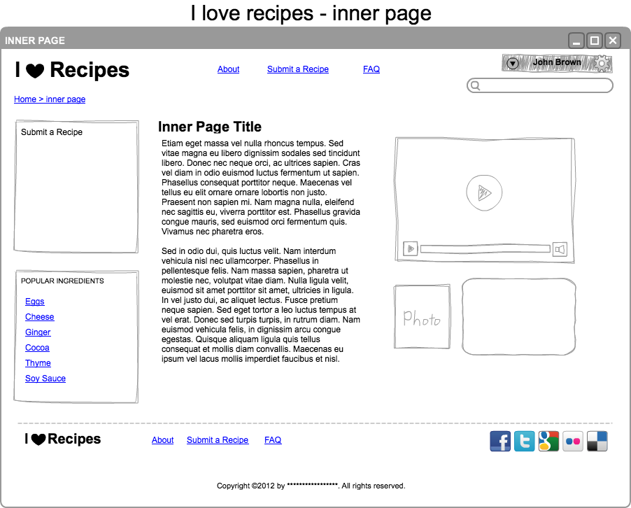
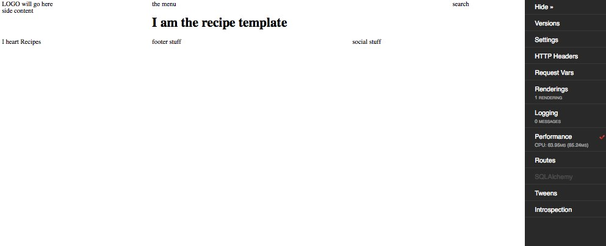

Building out additional views¶
In this tutorial we will:
- Explore how to use the views.py file to
define new views and associate templates and contexts with these new views.
- Make use of ZPT (Chameleon template) macros to create a master template which will be shared by the other templates
- Register the master template in the views.py file.
- Alter templates so that they can use the new global/master template.
- Alter the `views.py`file so that all templates use the new master template.
Remember that views.py is located in the recipewebsite folder (I’ve highlighted it with an ‘*’:
RecipeWebsite/recipewebsite/
├── __init__.py
├── models.py
├── static
├── templates
│ └── mytemplate.pt
├── tests.py
├── views.py*
We will include dummy data so that the views look realistic.
We will also look at the use of macros.
By convention, the procedure for adding a view is as follows:
- define the new view and associated template in the views.py file
- create the required template in the templates folder of the application
Views for our application¶
Based on the nature of our application we can predict some of views that we will need.
The names below represent reasonable descriptive choices for our Views:
- welcome
- a view which shows a welcome or home page, it is associated with the root of the website.
- recipe
- when viewing an individual recipe, this view will be used to display all the information for that recipe.
- ingredient
- search by ingredient, this view will return a list of recipes that have the particular ingredient.
- submitrecipe
- It should be possible to add a new recipe using the ‘submit a recipe’ link.
- registration
- There needs to be a registration page, so that new users can sign up
- faq
- This will be a simple view that lists common questions about the web application
Defining a new view in views.py¶
We’ll start by adding a single new view called recipe_view, it will use a template called recipe.pt. We will add recipe.pt immediately afterwards.
from pyramid.view import view_config
from .models import RecipeSite
@view_config(context=RecipeSite, renderer='templates/welcome.pt')
def my_view(request):
return {'project':'RecipeWebsite'}
@view_config(renderer='templates/recipe.pt',name='recipe_view')
def recipe(request):
return {}
Adding a template in the templates folder¶
In the templates folder we will add a new template called recipe.pt. To make it very simple we will just put the phrase, “I am the recipe template”.
<h1>I am the recipe template</h1>
View the new view in your browser¶
Start the application:
pserve development.ini
Then visit localhost:6543/recipe_view, you should see something like the image below.

Passing variables to the template¶
Variables are generally passed to Chameleon templates as key value pairs of a python dictionary. Notice how this approach is used to define the ‘project’ in the root template my_view.
@view_config(context=RecipeSite, renderer='templates/welcome.pt')
def my_view(request):
return {'project':'RecipeWebsite'}
Defining macros and slots, creating a master template¶
After a while we begin to see things that are common to all templates. Instead of repeating these elements across different templates, we can share these elements by creating a global or master template. New templates can be made to inherit from the master template. In our case the welcome.pt template is a good starting point.
Based on our mockups, most pages will be simpler than the front page so we will create a more generic template based on the welcome.pt template.
We’ll create a new master template called ‘global.pt’ in the templates folder. We can use the welcome.pt template as the starting point.
The simpler global template can be implemented with 3 rows instead of 5 in the welcome template.

Pay attention to the following changes:
- the addition of a metal:define-macro line
- the addition of a define-slot which will act as a replaceable region.
- in general this template is more generic
We name our template global.pt:
<!DOCTYPE html>
<html
xmlns:metal="http://xml.zope.org/namespaces/metal"
xmlns:tal="http://xml.zope.org/namespaces/tal"
metal:define-macro="layout">
<head>
<head>
<style>
<!--
@import url(http://dl.dropbox.com/u/1004432/decogrids-12-gapless.css);
-->
</style>
</head>
<body>
<div id="row-1" class="row">
<div class ="cell position-0 width-3">
LOGO will go here
</div>
<div class ="cell position-3 width-6">the menu</div>
<div class ="cell position-9 width-3">search</div>
</div>
<div id="row-2" class="row">
<div class ="cell position-0 width-3">side content</div>
<div class ="cell position-3 width-9">
<div metal:define-slot="content">
main content
</div>
</div>
</div>
<div id="row-3" class="row">
<div class ="cell position-0 width-3">I heart Recipes</div>
<div class ="cell position-3 width-4">footer stuff</div>
<div class ="cell position-7 width-5">social stuff</div>
</div>
</body>
Using macros and fill-slots with a master template¶
Before our master template will work, we need to make it available via the views.py file.
from pyramid.view import view_config
from .models import RecipeSite
from pyramid.renderers import get_renderer
def master_template():
renderer = get_renderer("templates/global.pt")
master = renderer.implementation().macros['master']
return master
@view_config(context=RecipeSite, renderer='templates/welcome.pt')
def my_view(request):
return {'project':'RecipeWebsite'}
@view_config(renderer='templates/recipe.pt',name='recipe_view')
def recipe(request):
return {master:master_template()}
Note
Notice a few things:
- the use of pyramid.renderers.get_renderer.
- the method master_template() is used by the recipe() method
We now have a master_template method, which is returned as the variable master by the recipe_view.
The key commands when using ZPT macros are use-macro and fill-slot.
Let’s update the recipe.pt template to use our new master template. The old template looked like this:
<h1>I am the recipe template</h1>
Thanks to the changes in views.py, the new recipe.pt template now uses the global.pt master macro and looks like this:
<div metal:use-macro="master">
<div metal:fill-slot="content">
<h1>I am the recipe template</h1>
</div>
</div>
Launch the application using the pserve development.ini command and visit http://localhost:6543/recipe_view
It should look similar to this:
Discussion¶
- If you’ve worked with standard PHP you may notice a difference between the view/template approach and the standard approach of embedding html and logic in PHP.
- If the template is called ‘global.pt’, how is it that we were able to refer to it as ‘master’ in the updated template?
Lab Exercises¶
Try adding the following to any of your .pt templates:
${request}Observe the output.
Configure views.py to support the additional templates that we discussed including:
- ingredients
- faqs
- registration
- submitrecipe
Create the corresponding templates for these views:
- ingredients
- faqs
- registration
- submitrecipe